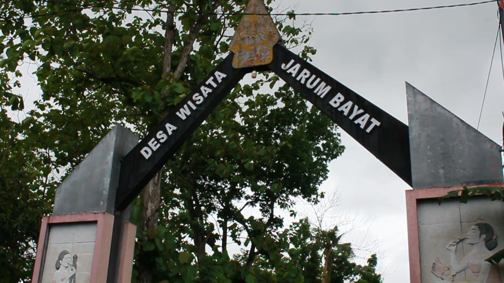
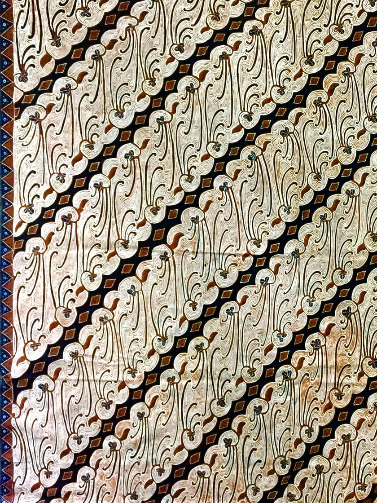
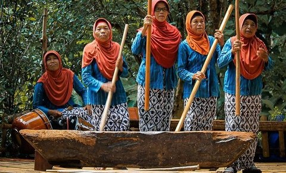

Jelajahi budaya khas Bayat melalui pengalaman langsung: membatik, membuat gerabah, serta belajar seni tradisi gejog lesung dan gamelan bersama Sanggar Sunar Gamelan.

Belajar batik tulis langsung di kampung batik Desa Jarum, dilanjutkan pengalaman karawitan/gamelan khas Bayat.
Kunjungan ke sentra gerabah Bayat, praktik membentuk tanah liat, dan ditutup dengan kelas gamelan bersama.

Rasakan sensasi seni bunyi tradisional gejog lesung, lalu kolaborasi ritme dengan gamelan.